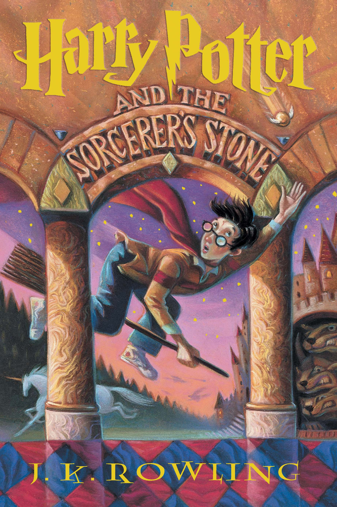

Harry Potter and the Philosopher's Stone begins with Harry Potter, a shy and self-doubting boy wizard being brought up by his awful aunt Petunia and uncle Vernon along with his fat cousin Dudley. Dudley lived a life of king, whereas Harry was more like a servant. He has a lightening shaped scar on his forehead when his parents died in a car crush when he was a baby. But ,the real fact was that he received the scar after an attack by the evil and powerful wizard Voldemort known as "You-Know-Who" who even killed Harry's Parents. This truth is only known to the the Headmaster and Deputy Headmistress of Hogwarts school of Witchcraft who left Harry with his uncle after this awful incident and awaited to get him back until he is of age to attend the Hogwarts school. Days went by when he receives a mail to enter into the Hogwarts school of wizards, the best wizard school in the world at the age of 11. After, a little struggle with his uncle and aunt, he entered the school with the help of the Half-giant Rubeus where he learnt the pros and cons of Witchcraft and Wizardry along with his new friends Hermione and Ron Weasley. The first year at the school, Harry begins to explore the magical world where at the end he goes in quest for the Philosopher stone which can be used to brew an elixir that can make the drinker immortal with Lord Voldemort following Harry.
The series continues with Harry Potter and the Chamber of Secrets ,a sequel to Harry's second year at school. Ron's younger sister Ginny finds a book belonging to Lord Voldemort's school days in which she reads out a chapter about 'Chamber of secrets' which in turn proves a gateway for an ancient monster out. He (monster) disturbs the children in Hogwarts school. The novel delves into the history of Hogwarts and the tale of the Chamber. Harry comes to know more about his world, his ability to speak the language of the snakes (a rare dark art) and also learns few secrets about Lord Voldemort. The book ends with Harry fighting the monster saving Ginny and unknowingly destroys a piece of a soul (horcrux) hidden by Lord Voldemort in the dairy (book) .
Following the series is the Harry Potter and the Prisoner of Azkaban elaborating Harry's third year in his magical school. In this series, Harry comes to know about Remus Lupin and Sirius Black, friends of his father. The former teaches him the defensive measures against the dark creatures with the power to devour a human soul (dementors) and the latter happens to be an escaped murderer believed to have assisted in the deaths of Harry's parents. But he turns out to be Harry's godfather and the only piece of family Harry has left.
Harry Potter and the Goblet of Fire starts with Harry's fourth year at his magical school. Here, Harry was misguided by Professor Alastor "Mad-Eye" Moody (Voldemort's supporter) who made Harry participate in a dangerous Triwizard Tournament to bring Harry to Voldemort succeeds. But, Harry escapes his plans making Voldemort to reenter as mortal in the wizarding world .
The fifth book marking the fifth year "Harry Potter and the Order of the Phoenix", Harry encounters a secret society called the Order of the Phoenix which was reactivated due to the arrival of Voldemort to protect Harry and to defeat Voldemort's supporters. With so many happenings, the school was transformed under the authority of Dolores Umbridge, the High Inquisitor of Hogwarts where she banned the students to learn the defense art against dark magic. So, Harry forms a secret study group known as "Dumbledore's army" in order to teach his classmates the higher skills of defense against the dark arts he has learned. In the end, Harry discovers Voldemort's actions telepathically (through past connections), fights Voldemort's Death Eaters along with his friends thereby saving Hogwarts once again.
The sixth year at school deals with Voldemort open war and Harry's adolescence. Harry begins dating Ginny Weasley. He also stumbles upon an old potions textbook filled with annotations and recommendations signed by a mysterious writer, the Half-Blood Prince marking another book "Harry Potter and the Half-Blood Prince". He also learns from Albus Dumbledore that Voldemort's soul is splintered into a series of horcruxes, an evil enchanted items hidden in various locations. Harry's adversary Darco Malfoy attempts to attack Dumbledore at various times and finally Professor Snape kills Dumbledore towards the end of the book.

The final book, Harry Potter and the Deathly Hallows is divided into two parts where Voldemort has completed his ascension to power and gains control of the Ministry of Magic. Harry and his friends drop out of the school to find and destroy the remaining horcruxes of Voldemort. As they search the horcruxes, they come to know more about the Professor Snape who always disliked Harry from the beginning of the novel and the past of Mr.Dumbledore. As the world would have seen as on July 15, 2011, the book/movie concludes with Harry discovering himself as one of the horcruxes and so surrenders himself to Voldemort who cast a Killing curse on Harry. But soon Dumbledore explains that the Horcrux inside Harry has been destroyed when Voldemort used Harry's blood to regain his full strength. Finally towards the end, Harry returns and defeats Voldemort and his supporters with the help of his friends (Ron and Hermione) along with the members of the Order of the Phoenix, his teachers and students thus saving the world of Witchcraft and Wizardry.
A graduate of Exeter University, Rowling moved to Portugal in 1990 to teach English. There, she met and married the Portuguese journalist Jorge Arantes. The couple's daughter, Jessica, was born in 1993. After her marriage ended in divorce, Rowling moved to Edinburgh with her daughter to live near her younger sister, Di. While struggling to support Jessica and herself on welfare, Rowling worked on a book, the idea for which had reportedly occurred to her while she was traveling on a train from Manchester to London in 1990. After a number of rejections, she finally sold the book, Harry Potter and the Philosopher's Stone (the word "Philosopher" was changed to "Sorcerer" for its publication in America), for the equivalent of about $4,000. The book, and its subseqent series, chronicled the life of Harry Potter, a young wizard, and his motley band of cohorts at the Hogwarts School of Witchcraft and Wizardry.On December 26, 2001, J.K. Rowling married anesthetist Dr. Neil Murray at the couple's home in Scotland. They have two children together, David (born in 2003) and Mackenzie (born in 2005). Rowling has one child, Jessica (born 1993), from her previous marriage.